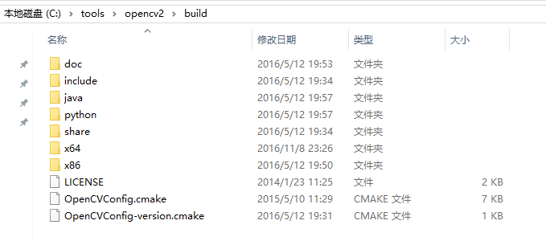
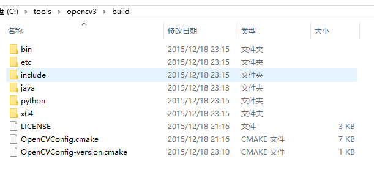

在 windows 上编译安装 opencv2 以及 opencv3，同时配置 python2 与 python3。预期目标是能够同时使用 python2/3 与 opencv2/3，共三种组合方式（opencv2 不支持 python3.x 版本）。
Linux，macOS，Raspberry Pi 等其他平台上的 OpenCV 安装请在 OpenCV 3 Tutorials, Resources, and Guides 寻找合适的方法，本文很大程度上参考了系列中的 Ubuntu 16.04: How to install OpenCV，甚至可以说是其在 windows 上的移植。
Step 0.Goal
这里假设我们想要把 opencv 安装到 C:\tools\opencv_all_in_one，也就是分别是 C:\tools\opencv_all_in_one\opencv2 与 C:\tools\opencv_all_in_one\opencv3，最终希望与直接从官网下载解压下来的内容相似，就像是：
 
且同时支持 python2 与 python3。
Step 1.Requirements
- Win10 [win7 应该也可以，没有做测试]
- VS2015 community [Free 的 community 版本，Long live Microsoft -.-]
- cmake
- git
- python2 and/or python3
Note：安装后三项时建议使用 choco 安装，可以自动添加 PATH，另外使用命令行会减少不少截图工作。
下面命令，如无特别说明建议在 git 提供的命令行窗口 -- 左上角有 MINGW64 的那个窗口执行：

1 | # 确保所需软件 |
另外，我的 python2 安装在了 C:\tools\python2 中（choco 自动选择了此目录），请确保 python2/3 均安装了 numpy（pip install numpy）。
Step 2.Get opencv from github
1 | $ pwd |
其中 opencv_contrib 是因为 opencv3 中把许多 Non-free 模块放在了里面（比如著名的 SIFT,SURF 等），另外还有一些目前并不太成熟的新算法也都在里面，我们在编译 opencv3 时需要使用它。
Step 3. 编译 opencv2
3.1. 切换到合适的版本
查看可以选择的版本，在输入 git checkout 后按 TAB 建：
1 | $ pwd |
1 | # 选择 2.4.x 中最新的版本 |
3.2. 进行编译配置
我们上面的 opencv_git 文件夹仅用于存储官方的文件，下面新建一个临时文件进行编译：
1 | $ pwd |
将 opencv_git\CMakeLists.txt 拖入界面:
Note:我的截图中 opencv 是在 opencv3_git 文件夹下，请原谅
1.更改目标路径
2.点击 Configure
3.确保生成器合适
4.点击 Finish
会自动生成配置文件，另打开一个 git-shell：
1 | $ pwd |
此时的截图如下：
- 在
Search框搜索python确保 python 被正确找到 - 也可在下面的输出结果中查找
python项
然后，点击 Generate，会发现下面的输出框最后一行出现：
1 | Generating done |
3.3. 编译
之后，我们就可以编译了，（双击）打开 opencv_build_v2_tmp 中的 OpenCV.sln，是一个熟悉的 VS 工程：
其中：
1.CMakeTargets 保持默认 ALL_BUILD 即好
2.选择 Release 与 x64 版本
3.点击 x64 右侧的下拉框
4.出现的窗口中第三项 INSTALL 的 Build 默认是没有勾选的，将其勾选
之后，等一段时间（编译阶段 CPU 占用会很高）
编译结果为：
不必在意提示的错误，这是因为我们编译后并没有可运行的文件
1.输出框最后指示出全部编译成功！！
2.cv2.lib 即为 python2.x 需要的
上面也可以选择不进行 INSTALL，在编译结束后可以另外安装，此时可以将 CMakeTargets 中的 INSTALL 右键设置为 Set as StartUp Project，运行，瞬间结束，输出很好地指示我们安装在了哪里：
3.4. 整合编译结果
此时，C:\tools\opencv_build_v2_tmp\bin\Release 包含了一些例子的可执行文件，还有许多的 dll 文件，C:\tools\opencv_build_v2_tmp\lib\Release 中包含了我们需要的库。
但，我们几乎只需要 C:\tools\opencv_build_v2_tmp\install 中的文件即可：
与官方提供版本相比，少了一些东西，需要注意的是我们前面说到的 python 使用，这里并没有，但编译结束时确实生成了，所以我们自己将其取出来：
新建 python\2.7\x64 的三层文件夹，将 C:\tools\opencv_build_v2_tmp\lib\Release\cv2.pyd 复制到 C:\tools\opencv_build_v2_tmp\install\python\2.7\x64 中。
3.5. 配置编译环境
复制需要的文件
1 | $ pwd |
将 install 文件夹下所有文件复制到 opencv2 文件夹下，此时我们可以直接删除 c:/tools/opencv_build_v2_tmp 整个文件夹了，我们只需要 C:\tools\opencv_all_in_one\opencv2 文件夹内的内容。
配置 PATH 路径
这里参考 CMake 简介和 CMake 模板 来验证，其中 OpenCV 的配置可以参考同一作者写的教程：
1 | # copy and change from https://github.com/district10/cmake-templates/issues/4 |
Update 20170410: 根据需要更改 vc10 或者是 vc14。
3.6. 验证编译、配置无误
在使用原作者提供的 CmakeLists 时请确保使用 cmake-gui 来保证我们是生成合适的目标，即：
确保是生成 Visual Studio 14 2015 Win64 的工程（这也是刚我们编译 OpenCV 时选用的配置）。
直接使用 cmake 很可能会出错：
1 | $ pwd |
会得到：
1 | [...] |
很明显，它默认选择的 OpenCV ARCH 是 x86，而我们需要的是 x64，所以，为减少不必要的麻烦请使用 cmake-gui。
Step 4. OpenCV3 的编译
编译 OpenCV3 与上面的步骤很相似，不过要将之前提到的 opencv_contrib 模块用上。
4.1. 选取合适的版本
1 | $ pwd |
请确保 contrib 模块与 opencv3 的版本相同，不然很可能出现一些问题。
4.2. 验证 python 版本
首先确保 python 版本没有问题，在 Search 框内搜索 python 会得到类似于下面的结果：
可以看出自动检测到了 python2 与 python3 的路径，这样便会生成两者的 binding。
4.3. 添加 contrib 库
此时需要将 contrib 加入进来，在 Search 框内输入 extra，将对应路径填入右侧空格，需要注意的是填入的是 C:/tools/opencv_contrib/modules 而不是 C:/tools/opencv_contrib （前者多了 modules 目录）：
4.4. 整理编译得到的内容
之后便是编译了，与上面没有什么不同，这里看一下最终得到的 install 文件夹内的内容：
还是没有我们想要的 python 文件夹，与上面类似，新建 python\2.7\x64 的三层文件夹，将 C:\tools\opencv_build_v3_tmp\lib\Release\cv2.pyd 复制到 C:\tools\opencv_build_v3_tmp\install\python\2.7\x64 中，类外，我们一直说的 python3 支持还没有做到，会发现 C:\tools\opencv_build_v3_tmp\lib\python3\Release 文件夹内有一 cv2.cp36-win_amd64.pyd 文件，这便是 python3 对应的 cv2.pyd，将其复制到新建的 C:\tools\opencv_build_v3_tmp\install\python\3.6\x64 文件夹下。
将整个 C:\tools\opencv_build_v3_tmp\install 文件夹内容复制到 C:\tools\opencv_all_in_one\opencv3 中。
好，算是结束了。
4.5. 验证安装
验证方法与上面 opencv2 时相同，不再赘述。
Step 5. python binding
我们上面均进行了 python binding 的编译，也将文件放在了合适的地方，但是还未曾进行验证。
在 INSTALL 工程中已经将 python binding 安装到了所选择的 python2/3 中：
1 | $ pwd |
其中 install_manifest.txt 记录了安装到的路径，最简单的检验方法便是直接试一下：
1 | $ python |
或者是：
1 | $ C:\tools\python2\python |
5.1. virtualenv 配置工作环境
但是安装到全局也许并不是我们最希望的，比如说此时 opencv2+python2 的组合是没有的（因为是后来编译的 opencv3，将之前的结果覆盖了），所以建议使用 virtualenv 来建立三个虚拟 python 环境：
1 | $ pwd |
其中，--always-copy 指 Always copy files rather than symlinking，建议如此，但是 -p C:/tools/python2/python.exe 是必要的，不然会生成默认版本的 python（这里指 python3）。
下面的命令请在 cmd 中运行（在 git-shell 中我是遇到了一些问题）
1 | $ pwd |
安装 numpy，并将合适的 cv2.pyd 复制到 site-packages 中：
1 | (cv2_py2) H:\py_env>pip install numpy |
验证：
1 | (cv2_py2) H:\py_env>python |
请注意与上边调用 SIFT 的区别，sift = cv2.xfeatures2d.SIFT_create()(opencv3) 与 cv2.FeatureDetector_create("SIFT")(opencv2)，这也证实了我们也成功编译了 contrib 库。
cv3_py2 与 cv3_py3 虚拟环境的安装与配置之无差，不再赘述
可能有一点需要注意的是 opencv3 生成的 python3 对应的文件为 cv2.cp36-win_amd64.pyd，不必太在意，将其当作 cv2.pyd 即可（也可以将其重命名为 cv2.pyd，但不必要）：
1 | (cv3_py3) H:\py_env>cp C:\tools\opencv_all_in_one\opencv3\python\3.6\x64\cv2.cp36-win_amd64.pyd cv3_py3\Lib\site-packages |
总结
我们在 windows(10) 上源码编译了 opencv2 与 opencv3，同时也生成了对应的 python binding，且使用 virtualenv 来配置干净的编程环境。
我们没有涉及的
需要注意到我们并没有将 opencv 的性能发挥到很好，有许多加速功能我们并没有配置：
- GPU/TBB/OpenGL support
- Matlab/Java binding
想要了解一部分相关内容，请参见官方文档：Installation in Windows¶
UPDATE 20170410，CUDA 支持
最近尝试了网上 GPU(CUDA) 版本的 SIFT，同时编译了一下 opencv 的 GPU 支持，遇见了一点问题。
- Win10
- VS2015 community
- cmake
- CUDA v8.0
1 | C:\Program Files\NVIDIA GPU Computing Toolkit\CUDA\v8.0\extras\demo_suite>deviceQuery.exe |
遇到了类似于：
1 | C2610 and C2535 error for file tuple in the opencv_perf_cudawarping project. |
的错误，在 OpenCV 的 issue 下找到了一个 workaround:
1 | What I did was to enable WITH_CUBLAS aswell as WITH_CUDA. I also turned off BUILD_PERF_TESTS and BUILD_TESTS. |
这被标记成了一个 bug，所以应该会被修复，放在这里是为了提醒大家如果遇到了编译错误，可以考虑首先去 opencv 的 github issue 中寻找解决方案。